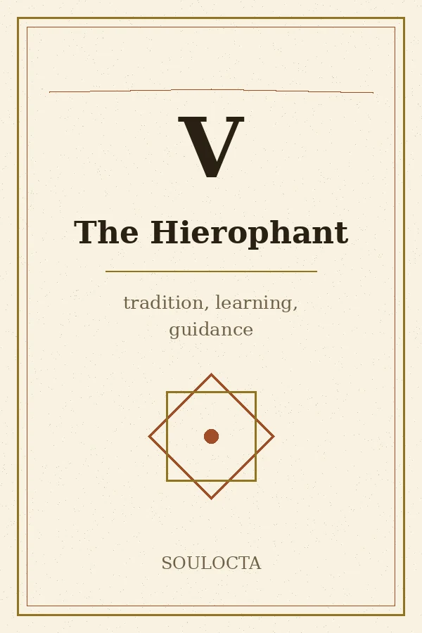

Arcana 5 · The Hierophant
The Hierophant — Arcana 5 of the Destiny Matrix
Arcana 5, the Hierophant, is the card of learning things properly and then passing them on. In the Destiny Matrix it marks the person who respects the method, finds a good teacher, and becomes one. The Hierophant is not old-fashioned. It is the understanding that some things are worth doing the slow way, because the slow way works.

What does the Hierophant mean in the Destiny Matrix?
The Hierophant as a Destiny Matrix position means you learn best from a teacher, a method and doing things properly — and then you pass it on. The traditional image is a figure between two pillars, blessing two students: the knowledge is not secret, and it is not new, and that is the point. Wherever this card sits, the area improves when you respect the method, understand why the rule exists, and only then decide whether to break it.
| Zone | Positive (+) | Negative (−) | Actionable shift |
|---|---|---|---|
| Centre | A clear method; trusted guidance; belonging to something bigger | Dogma; judging outsiders; repeating rules without asking why | Keep one tradition, drop one habit, and say why |
| Money line | Teaching, mentoring, standards, certification | Selling a method you no longer believe in | Teach the part you still believe, honestly |
| Love line | Shared values; family; a relationship with a shape | Marrying the tradition, not the person | Ask what you believe, not what you were taught to want |
| Talent | Explaining hard ideas in plain words | Hiding behind jargon to sound expert | Explain it to a twelve-year-old, then use those words |
| Karmic tail | Learning which rules are true and which are habit | Repeating a family rule that no longer fits | Name the rule, test it once, then decide |
The Hierophant as your centre (E)
The Hierophant in the centre means your whole chart is organised around guidance: learning from people who know more, and becoming someone others can learn from. People come to you for a straight answer, and they trust it because you have done the work. You are at your best when you belong to something bigger than yourself — a craft, a faith, a profession — and at your worst when belonging becomes judging everyone outside the group. The Hierophant is also a member of the millionaire code 5-14-19, so read the money blockage and millionaire code guide alongside this one.
The Hierophant in your money line
The Hierophant in the money line means your income grows from teaching, mentoring and keeping standards. Training courses, apprenticeships, professional exams, certification, editing a journal, running a guild — work where someone pays you because you know the right way to do it and can show them. The line rewards depth of method, not novelty. The trap is selling a method you no longer believe in, which hollows out the work. Teach the part you still believe, honestly, and let the rest go.
The Hierophant in your love line
The Hierophant in the love line means shared values matter more than sparks. A relationship with a shape — a wedding, a family ritual, a shared faith or a shared craft — gives this position its strength, and partners who agree on the big things do well even when the small things irritate them. The trap is marrying the tradition instead of the person: staying because the family expects it, or because leaving would break a rule. Ask what you believe, not what you were taught to want.
The Hierophant in your talents
The Hierophant in your talents means you can explain a difficult idea in plain words, and people remember the explanation. That is a rare skill, and it is the reason good teachers are remembered for decades. The trap is hiding behind jargon to sound expert, which is the opposite of teaching. The test is simple: explain it to a twelve-year-old, and if the twelve-year-old understands it, use those words with everyone.
The Hierophant reversed, blocked or low
A blocked Hierophant looks like a rule followed long after its reason is gone. The family does it this way, the firm does it this way, the group does it this way — and nobody can say why, because nobody has asked for years. The block is not respect for tradition. It is fear of what the group will say if you ask. The fix is one honest question, asked out loud, about one rule, and then a decision based on the answer rather than on the silence that follows.
How to work with the Hierophant this month
Pick one thing you believe because you were taught it, and test it this month. Not by arguing about it, and not by throwing it away, but by checking it against your own experience: does this rule still make your life better, or does it only make you feel safe? Keep one tradition that passes the test, drop one habit that fails it, and say why, in plain words, to one person. The Hierophant grows when tradition becomes a choice instead of a cage.
How to turn The Hierophant from minus to plus
Five shifts, from minus to plus. First, I follow rules without asking why becomes I keep one tradition and drop one habit, and say why. Second, I judge everyone outside my group becomes I ask what they believe before I judge it. Third, I hide behind jargon becomes I explain it so a twelve-year-old understands. Fourth, I teach what I no longer believe becomes I teach the part I still believe, honestly. Fifth, I marry the tradition, not the person becomes I ask what I believe, not what I was taught.
Check where this energy sits in your free Destiny Matrix chart — enter your birth date and see whether The Hierophant is your centre, your talent, or your karmic tail. If it is, also read your money line and destiny-matrix-money-blockage-millionaire-code.html.
Related guides
Keep reading: destiny matrix vs numerology · destiny matrix vs tarot · destiny matrix for beginners · destiny matrix FAQ · the Chariot, arcana 7 of the Destiny Matrix · Justice, arcana 8 of the Destiny Matrix · the Lovers, arcana 6 of the Destiny Matrix · the Devil, arcana 15 of the Destiny Matrix · the Sun, arcana 19 of the Destiny Matrix · karmic tail 18-6-6, Love Magic · karmic tail 15-20-5, the Rebel · karmic tail 9-9-18, Magical Knowledge · the Magician, arcana 1 of the Destiny Matrix · the Empress, arcana 3 of the Destiny Matrix · the Emperor, arcana 4 of the Destiny Matrix · the Wheel of Fortune, arcana 10 of the Destiny Matrix · Strength, arcana 11 of the Destiny Matrix · the World, arcana 21 of the Destiny Matrix · karmic tail 15-8-11, Physical Suffering · karmic tail 21-4-10, Oppressed Soul · karmic tail 12-19-7, Warrior · karmic tail 6-17-11, Wasted Talent · all 22 arcana meanings · all karmic tail guides · Destiny Matrix compatibility calculator · what is the Destiny Matrix · how to calculate the Destiny Matrix.
Frequently asked questions
What does arcana 5, the Hierophant, mean in the Destiny Matrix?
Arcana 5, the Hierophant, means tradition, learning and guidance in the Destiny Matrix. The Hierophant marks the person who learns from a teacher, respects the method, and becomes a guide for others. It marks the person who learns the rules before choosing which to break.
What does the Hierophant mean as a centre?
The Hierophant as a centre means guidance is the theme of your chart. People come to you for a straight answer, and your growth comes from learning deeply and then teaching honestly, keeping what is true and letting go of what is only habit.
What does the Hierophant mean in the money line?
The Hierophant in the money line means your income grows from teaching, mentoring and keeping standards. Training, apprenticeships, certification and editing all pay when you know the right way to do something and can show someone else. The line rewards depth of method, not novelty.
What does the Hierophant mean in love?
The Hierophant in the love line means shared values matter more than sparks. A relationship with a shape does well, but the trap is marrying the tradition instead of the person, so ask what you believe, not what you were taught to want.